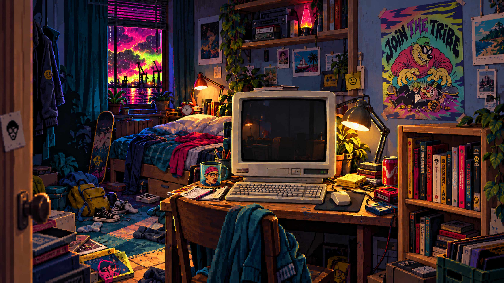
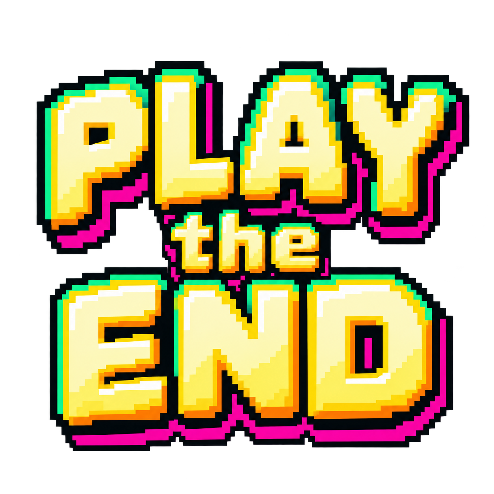
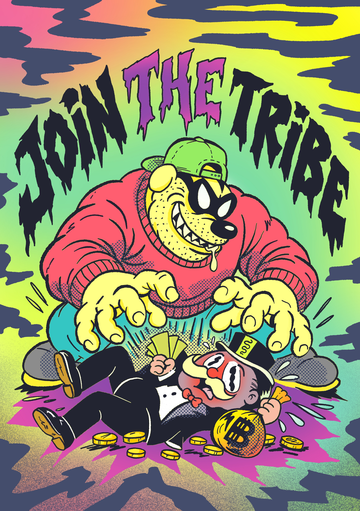
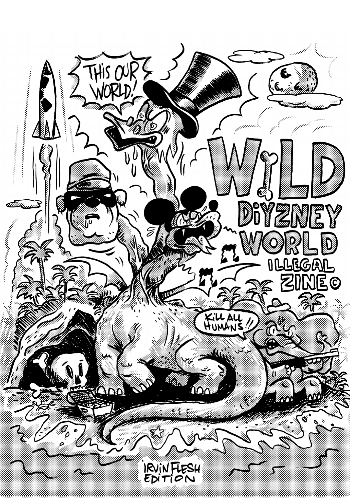

Choisir une zone
DÉMOUne zone, un risque de départ
Chaque zone a ses signaux. Chaleur, sécheresse et pollution font monter la pression ; vent et séismes renforcent les ripostes. Plus l’indice est élevé, plus le départ est tendu.
Plus vous réussissez, plus tout se dégrade
Votre flotte affronte les ressources cachées de la Terre. Chaque case de ressource touchée augmente la jauge cataclysme : les ripostes deviennent plus redoutables, les cargos sont en danger.
Deux camps, une fausse victoire
Toutes les ressources achetées : vos babioles survivent. Flotte coulée : la Terre gagne. Les signaux du monde nourrissent des règles fictives ; DÉMO indique une source indisponible.
N°ZONETENSIONDATA
Bornéo
Indonésie / Malaisie
- VENT
- 24 km/h DÉMO
- TEMPÉRATURE
- 31 °C 61 % humidité
- AIR / PM2.5
- 21 µg/m³ DÉMO
- SÉISMES / 24H
- 1 DÉMO / 1 000 km
- PORTWATCH / NAVIRES
- À raccorder Pilote : Suez seulement
0 / 100
Options
Lecture audio indisponible.


WILDIYZNEY WORLDIrvin Flesh

Couverture / 12 pages
Page indisponible.
Crédits
- Concept, règles et direction artistique
- Chanic
- Dessins originaux
- Chanic
- Code, interface et intégration
- Codex (OpenAI)
- Décors, sprites et animations
- Codex (OpenAI)
Génération d’images et rendu pixel art - Musique originale
- Chanic / Blackpoodle Records
- Remasterisation musicale
- Suno
- Morceaux
- Break Beat 90s
Hazy Breakbeat - Icônes
- Lucide, adaptées en sprites pixel art
- Fanzine Bonus
- WILDIYZNEY WORLD
Irvin Flesh